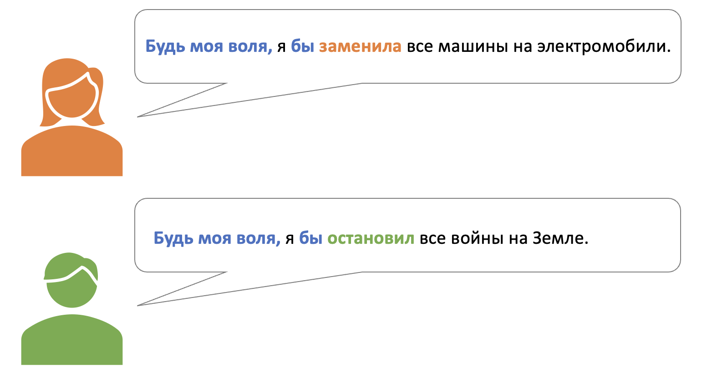

Конструкции урока:
| ID | Construction | Illustration |
|---|---|---|
| 1873 | VP, заодно VP | Сходи за хлебом, заодно мусор вынесешь. |
| 308 | словом, Cl | Словом, я хочу её видеть. |
| 11 | (как) по мне, (так) Cl | Как по мне, это ещё не беда. |
| 739 | будь моя воля, Cl бы | Будь моя воля, я бы одни конфеты ел. |
| 2279 | Cl, так (ведь)? | До магазина недалеко, так ведь? |
| 2303 | Сам подумать-Imp, Cl | Сам подумай, зачем взрослому человеку это нужно? |
XP = phrase (фраза)
Cl = clause, sentence (предложение)
Русский конструктикон https://constructicon.github.io/russian/
Я очень люблю праздники. Будь моя воля, я бы праздновал что-нибудь каждый день. Например, 3 марта — День писателя, 4 марта — День рождения микрофона, а 5 марта — День рождения степлера. Как по мне, все эти праздники очень важные. Сами подумайте, я пишу этот текст, значит, я писатель. Вы пользуетесь степлером, так? Значит, надо отмечать 5 марта. Словом, надо жить так, чтобы каждый день был как праздник!
Образец:
Я вчера сделала уборку дома, заодно нашла старые фотографии бабушки с дедушкой.
| 1. Я вчера сделала уборку дома 2. Помоги мне, пожалуйста, приготовить торт 3. Отправь приглашение на юбилей тёте Ирине 4. Давай пораньше украсим дом к Новому году 5. Он уже купил всей семье подарки на Рождество |
а. попробуем вместе новый рецепт. б. посмотрим, нужны ли нам новые ёлочные игрушки. в. нашла старые фотографии бабушки с дедушкой. г. нашёл себе новую рубашку на праздник. д. узнаешь как у неё дела. |
Образец:

а.
Ханна: — В День знаний в магазинах России не продают алкоголь, ?
Майкл: — Да. , это же праздник для школьников.
б.
Закир: — Масленицу отмечают три дня, ?
Фатима: — Нет. . Масленицу же называют Масленичной неделей, значит семь дней.
в.
Шарлотта: — Ты отмечаешь День защиты детей, ?
Лиам: — Нет. , я же уже не ребенок и детей у меня пока нет.
г.
Сара: — Тебе подарили цветы на 8 марта, ?
Оливия: — Конечно! , я же женщина.
д.
Джеймс: — Итон, ты отмечал День святого Валентина в этом году, ?
Итон: — Нет, конечно! , я же недавно расстался с девушкой.
Информация о Саше:
Что есть в магазине:
 тени для век (зелёные и красные) |
 Энциклопедия "История России" |
 Журнал "Феминизм в комиксах" |
 мягкая игрушка, мишка |
 мягкая игрушка, кот |
 настольная игра “Дженга” |
 термос (голубой) |
 шарф |
 курточка для собаки |
Образец:

Образец:
Праздник: 8 марта
— Как по мне, люди не понимают смысл этого праздника.
— Как по мне, этот праздник устарел.
| Праздники: | Подсказки: |
|
|
Кого поздравить:
Конструктор поздравлений:
| (Дорогой/Дорогая) + имя! (Уважаемый/Уважаемая) + имя + отчество! |
Поздравляю тебя/Вас/вас с + Ins
|
Желаю тебе/Вам/вам + Gen
|
Пусть + Fut
|
Словом,
|
Оля: Привет! Я в эти выходные праздную свой День рождения. Приходи, с Антоном познакомишься. , мы уже с ним полгода встречаемся, а с друзьями я его ещё не знакомила.
Лиза: Ты же дома празднуешь, ? это отличная идея. Обожаю приходить к тебе в гости. , я бы от тебя и не уходила никогда. , я обязательно буду! Во сколько всё начнётся?
Оля: Ура! Я жду всех к шести вечера, но ты приходи пораньше — поболтаем до прихода гостей.